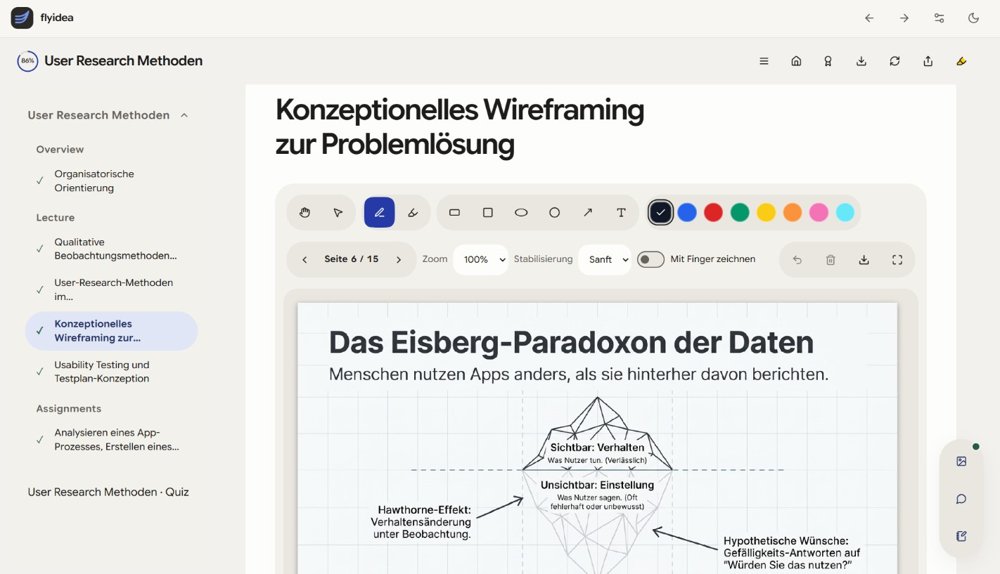

Deinen Stoff
mitbringen.
PDFs, Skripte oder Handbücher: Deine Unterlagen und dein Lernziel geben die Richtung vor.
Deine GrundlageLernen mit eigenen Unterlagen
Aus deinem PDF, Skript oder Handbuch werden verständliche Lektionen, passende Übungen und ein Lernweg, den du wirklich durcharbeiten kannst. Bald als Windows App auf deinem Desktop.
Alle gezeigten Funktionen sind bereits umgesetzt.
Die App ist noch nicht öffentlich verfügbar.
DEIN LERNPLATZ. AUF DEINEM RECHNER.
Deine Kurse, Lektionen und praktischen Aufgaben an einem Ort. So sieht flyidea als Desktop-App aus.

Die Idee bleibt. Die App zieht um.
AI-gestütztes Lernen mit deinen eigenen Unterlagen.
In deinem Tempo. Mit einem nächsten Schritt.
PDFs, Skripte oder Handbücher: Deine Unterlagen und dein Lernziel geben die Richtung vor.
Deine GrundlageAus deinem Material wird ein Lernkurs mit überschaubaren Kapiteln und verständlichen Lektionen.
Dein Aha-MomentMit Quiz und passenden Übungen. Bei technischen Themen auch mit Python, SQL und Web-Aufgaben.
Dein nächster SchrittWARUM FLYIDEA?
Aus einzelnen Informationen wird ein Kurs mit Anfang,
Fortschritt und einem nächsten sinnvollen Schritt.
Du lernst für eine Vorlesung, ein Fachthema oder ein eigenes Projekt. Begriffe, Schwerpunkte und Beispiele orientieren sich an deinen PDFs, Skripten und Handbüchern. Die Originalunterlagen bleiben zum Nachschlagen und Prüfen wichtig.
Dein Thema, dein Briefing und dein Lernziel bestimmen den Kurs. Beschreibe, was du schon kennst und was du danach erklären oder anwenden möchtest. So entsteht eine Lernfolge für deinen konkreten Stoff.
Verständliche Lektionen sind der Anfang. Mit Quizfragen, Rückfragen an den Lerncoach und passenden praktischen Übungen überprüfst du dein Verständnis. Bei Python, SQL und Webentwicklung kannst du Aufgaben direkt in der App bearbeiten.
DREI BEISPIELE
Aus Vorlesungsskript, Folien und Aufgaben entsteht eine bearbeitbare Lernfolge. Wiederhole Begriffe, arbeite Beispiele durch und prüfe dein Wissen mit Quizfragen.
Skript + Aufgaben ↗ Lernkurs + QuizEin umfangreiches Handbuch wird in überschaubare Kapitel aufgeteilt. Du lernst eine Lektion nach der anderen und stellst gezielte Rückfragen zu unklaren Stellen.
Handbuch ↗ Kapitel + LerncoachLerne Python, SQL oder Webentwicklung an kleinen Aufgaben. Verändere Eingaben, prüfe die Ausgabe und finde heraus, ob du den Ablauf selbst erklären kannst.
Python, SQL, Web ↗ Praktische ÜbungMIT DEINEN UNTERLAGEN BEGINNEN
Anleitungen und Beispiele für deinen nächsten Lernkurs.
Vom ersten PDF bis zur praktischen Aufgabe.
So grenzt du dein Material ein, formulierst ein Lernziel und prüfst die Kapitel am Original.
02 / EIN GUTES BRIEFINGWie aus Thema, Unterlagen und einer konkreten Frage eine brauchbare Lernfolge wird.
03 / DEN STOFF ORDNENPDFs, Skripte und Handbücher auswählen, sinnvoll strukturieren und gezielt wiederholen.
04 / WISSEN ANWENDENMit Rückfragen, Quiz und überprüfbaren Aufgaben vom Lesen zum eigenen Verständnis.
05 / DEIN LERNALLTAGKurse organisieren, Lektionen bearbeiten und später an deinem Lernstand anknüpfen.
HÄUFIGE FRAGEN
PDFs, Skripte und Handbücher können die Grundlage für deinen Lernkurs bilden. Zusammengehörige Dateien lassen sich auch als ZIP bündeln. Beginne mit einem überschaubaren Thema und achte auf gut lesbaren Text. Die vollständige Erkennung von Handschrift, Scans oder komplexen Formeln ist nicht garantiert.
Beschreibe im Briefing, was du bereits kennst und was du lernen möchtest. Du kannst mit Grundlagen beginnen oder einen Schwerpunkt setzen. Die AI erkennt deinen Wissensstand nicht zuverlässig von allein; deine Angaben und die Prüfung am Original bleiben wichtig.
Du kannst gezielte Rückfragen zu deinem Kurs und deiner aktuellen Lektion stellen: etwa zu einem Fachbegriff, einem Rechenschritt oder einem Gegenbeispiel. Versuche anschließend, die Erklärung in eigenen Worten wiederzugeben und die Aufgabe selbst zu lösen.
Je nach Thema gibt es Quizfragen und passende Aufgaben. Bei technischen Themen unterstützt flyidea ausführbare Übungen zu Python, SQL und Webentwicklung. Für andere Fachgebiete helfen Verständnisfragen und der Vergleich mit deinen Unterlagen.
Wir konzentrieren uns auf installierbare Desktop-Apps für Windows und Linux. Diese Website ist die Ankündigungsseite für die nächste Version. Wenn du die App ausprobieren möchtest, schreib uns an E-Mail anzeigen.
Gespeicherte Kursinhalte liegen in der Desktop-App lokal vor. Für AI-gestützte Kurserstellung, neue Antworten und andere Online-Funktionen brauchst du je nach Anbieter eine Internetverbindung und ein eigenes Anbieterkonto. „Desktop“ bedeutet deshalb nicht, dass jede Funktion offline arbeitet.
AI kann Fehler machen oder Schwerpunkte falsch setzen. Vergleiche wichtige Aussagen, Begriffe und Formeln mit deinen Originalunterlagen. Prüfe dein Verständnis an Aufgaben. Ein erzeugter Lernkurs ersetzt keine fachliche Prüfung oder verbindlichen Vorgaben deiner Lehrveranstaltung.
Schreib uns an E-Mail anzeigen. Erzähle kurz, womit du lernen möchtest und ob du Windows oder Linux nutzt. Wir melden uns persönlich bei dir.
Wir konzentrieren uns ausschließlich auf Desktop-Apps für Windows und Linux.
Die gezeigten Funktionen sind bereits umgesetzt. Die App ist noch nicht öffentlich verfügbar. Du möchtest mehr erfahren, Early Access erhalten oder uns von deinem Lernalltag erzählen? Schreib uns.
AI-Funktionen können je nach App einen Internetzugang und ein eigenes Anbieterkonto benötigen.
NEUGIERIG GEWORDEN?